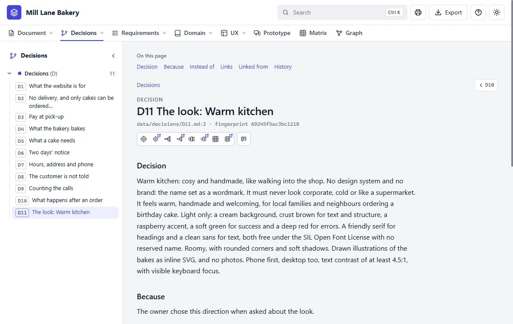

Step 6 of 20 · Make it
Choose the look
What Claude asks
Before it draws anything properly, Claude must stop and ask about the look. It never chooses one for you. These are the real questions:
| Claude asks | Why it matters | The owner's answer |
|---|---|---|
| Is there a design system already? | It would be followed, not reinvented | None |
| Is there a brand? Logo, colours, fonts | Only you have these | Just the name |
| What do you like? Sites, images, anything to point at | The best way to get a look if you can't describe one | Nothing to point at |
| What should it never look like? | Saves a wrong first draft | Corporate, cold, or like a supermarket |
| What should it feel like? Three words, and who it's for | Decides between directions | Warm, handmade, welcoming, for local families |
| Which theme? Light or dark, main colours | Becomes the values every screen uses | Light: cream, crust brown, raspberry |
| Type and shape? | Becomes the design rules | A friendly serif, roomy, rounded, soft shadows |
| Pictures? | Says what the prototype can show | Drawn illustrations |
| Who must it work for? | Sets sizes and readability | Phone first, and easy to read |
If you have nothing to go on
Say so. You'll get two or three directions to choose from, with a recommendation. The bakery had three:
| Direction | The idea | Colours |
|---|---|---|
| Warm kitchen (chosen) | Cosy and handmade, like walking into the shop | Cream, crust brown, raspberry |
| Fresh and light | Modern and airy | White, sage, warm grey |
| Old-town craft | Traditional, like a painted shop sign | Deep green, cream, gold |
Say this to Claude
Warm kitchen, please. Light theme, drawn illustrations of the bakes, and it must work well on a phone.
If you do have something
Give it to Claude: a brand book, a Figma file, a stylesheet, or sites and pictures you like. It reads them first and notes what it took from each. Say what you like about them: "I like how calm this one is" helps far more than "make it nice".
